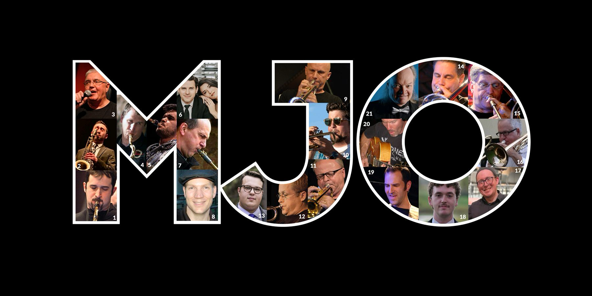
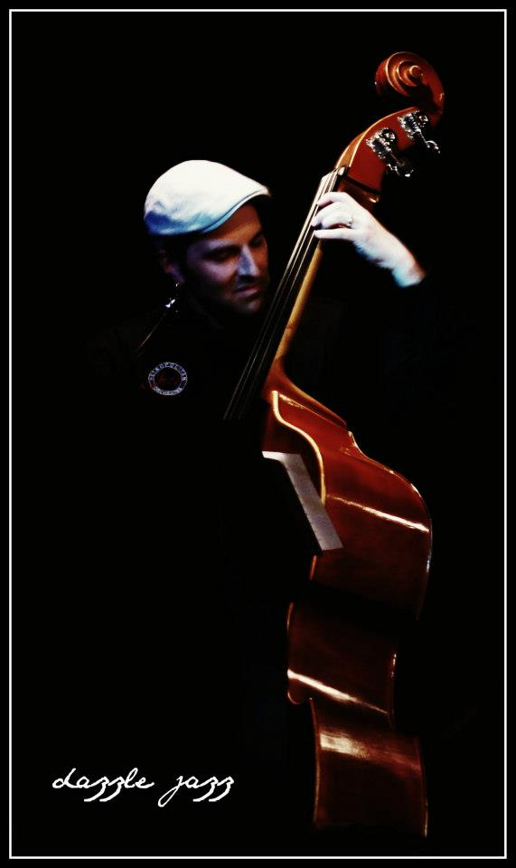
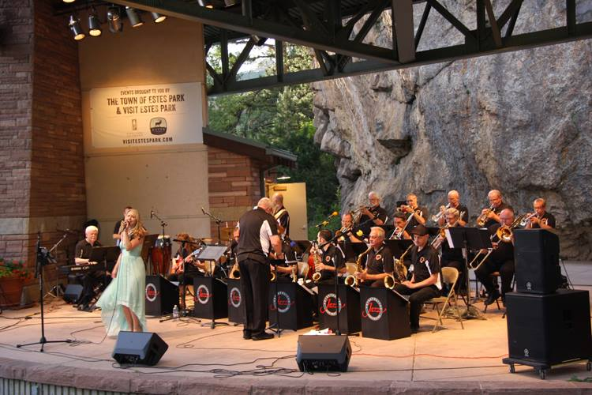
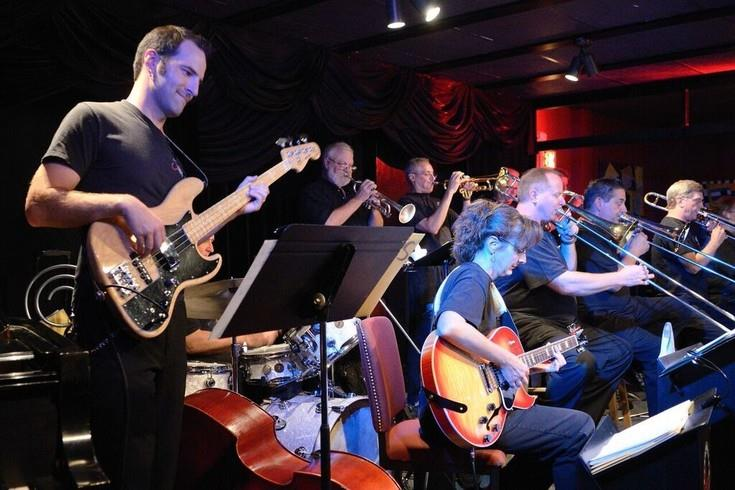

The Orchestra
The Metropolitan Jazz Orchestra is a full big band bringing the grand tradition of orchestral jazz into the present. Under Jason Malmberg's direction, the ensemble delivers programs that swing from the classic repertoire to original commissions.
The orchestra brings together the city's finest jazz musicians for concerts, festivals, and special events. Every performance is a full-production event.
In the lineage of Mingus's Jazz Workshop, Duke Ellington's band, and the great Count Basie Orchestra — but with eyes forward.

MJO Calendar
Concerts, festivals, and special events.
Follow the Orchestra
Photos



"Anyone can make the simple complicated. Creativity is making the complicated simple."Charles Mingus